Marco teórico#
Este capítulo reúne, en un solo lugar, las ideas de termodinámica, transferencia de calor, refrigeración, confort, estadística y aprendizaje automático que usa la tesis. Está escrito para alguien que no conoce estos temas. Cada sección parte de la definición más simple, la lleva a una ecuación y termina diciendo dónde se usa en el trabajo. Las fórmulas se pueden leer en orden, porque cada una se apoya en las anteriores.
Las figuras son ilustrativas. Usan las ecuaciones de los textos citados con números redondos o con datos sintéticos (semilla 42), no con los datos de la tesis, que están en los demás capítulos. Todas salen de scripts/marco_teorico.py, que corre sin datos internos y escribe las figuras en figuras/marco/.
1. El problema en una figura#
La tesis quiere saber cuánta electricidad usan, hora por hora, los aires acondicionados (A/C), los ventiladores y las neveras de los hogares de Barranquilla, separados por estrato. No hay medidores por hogar, así que la respuesta se construye de abajo hacia arriba (bottom-up). Se simula la física de cada vivienda y el comportamiento de cada hogar, se suman miles de hogares y el total se compara con el consumo facturado que sí se conoce (Swan y Ugursal, 2009). La Figura 3 muestra la cadena y qué herramienta teórica interviene en cada eslabón.

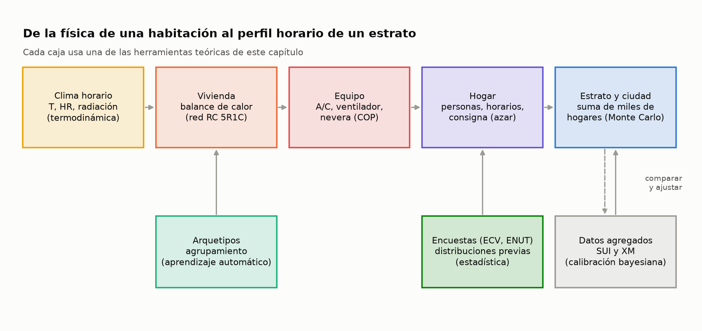
Figura 3 Cadena del modelo bottom-up de la tesis. Las secciones de este capítulo siguen el mismo orden: primero la física (secciones 2 a 5), luego la estadística (secciones 6 a 9) y por último el aprendizaje automático (sección 10).#
Los modelos de demanda residencial se dividen en dos familias (Swan y Ugursal, 2009). Los modelos top-down relacionan el consumo total de un país o una región con variables como el ingreso, el precio o la temperatura, sin describir los equipos. Los modelos bottom-up parten de las viviendas y sus equipos y suman hasta llegar al total. Dentro de estos últimos hay modelos estadísticos (regresiones o aprendizaje automático sobre datos de hogares), modelos físicos (balances de energía del edificio) y modelos híbridos. La tesis usa un modelo híbrido y estocástico, es decir, con una parte física y una parte de azar que representa las diferencias entre hogares.
2. Energía, potencia y perfiles de carga#
2.1 Potencia y energía#
La potencia \(P\) es la rapidez con que se usa la energía y se mide en vatios (W) o kilovatios (kW). La energía \(E\) es la potencia acumulada en el tiempo y se mide en kilovatios-hora (kWh), la unidad que cobra la factura:
Un A/C de 1,2 kW encendido 5 horas consume 6 kWh. Si en cambio trabaja 10 horas a media potencia, consume lo mismo. Por eso conocer la energía mensual no basta para conocer la hora en que se usa.
2.2 Perfil horario, pico y factor de coincidencia#
Un perfil horario o curva de carga es la potencia media de un conjunto de hogares en cada hora del día. La red eléctrica se dimensiona para la hora de mayor demanda (el pico), no para el promedio, así que la forma del perfil importa tanto como la energía total.
Cada hogar tiene un perfil muy irregular: su A/C está encendido o apagado, y el compresor además se prende y se apaga por ciclos. Pero los hogares no encienden sus equipos al mismo tiempo. El factor de coincidencia mide cuánto coinciden:
El numerador es el pico del grupo y el denominador es la suma de los picos individuales. Con un solo hogar \(F_c = 1\), y baja a medida que se agregan hogares con horarios distintos. Esta es la razón por la que un modelo estocástico se valida en el agregado y no hogar por hogar.

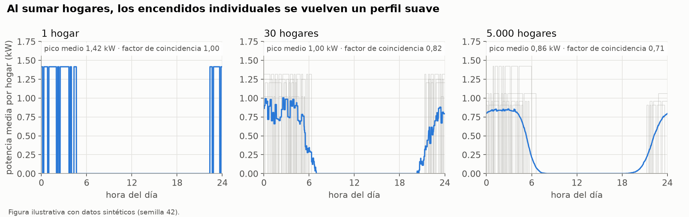
Figura 4 Perfil de A/C de un hogar, de 30 y de 5.000 hogares simulados con horas de encendido y apagado al azar. La curva azul es la potencia media por hogar y las líneas grises son algunos hogares individuales.#
2.3 Potencia por vivienda promedio y por vivienda con el equipo#
La tesis reporta la potencia por vivienda promedio de cada estrato, que incluye a los hogares que no tienen el equipo. Si \(\pi\) es la proporción de hogares con A/C (la tenencia) y \(\bar P^{\,\text{con}}\) es la potencia media de los que lo tienen,
La primera es la que se suma para obtener la demanda de la ciudad (multiplicándola por el número de viviendas). La segunda es la que interesa para evaluar un cambio de equipos.
3. Termodinámica y transferencia de calor en la vivienda#
3.1 Primera ley: el balance de energía de una habitación#
La primera ley de la termodinámica dice que la energía no se crea ni se destruye. Aplicada al aire de una habitación (un volumen de control), el cambio de su energía interna es igual a la suma de los flujos de calor que entran menos los que salen (Çengel y Boles, 2015):
donde \(T_i\) es la temperatura interior, \(\rho \approx 1{,}15\) kg/m³ es la densidad del aire, \(c_p \approx 1{,}006\) kJ/(kg·K) su calor específico y \(V\) el volumen. Los términos de la derecha son el calor que atraviesa muros, techo y ventanas, el aire exterior que entra, el sol que pasa por las ventanas, el calor de las personas y los equipos, y el calor que retira el A/C. Si el A/C mantiene la temperatura constante (\(dT_i/dt = 0\)), lo que retira es exactamente la suma de las ganancias. Esa cantidad es la carga de enfriamiento.
3.2 Conducción: ley de Fourier y resistencia térmica#
El calor fluye por conducción a través de un sólido desde la cara caliente hacia la fría. La ley de Fourier dice que el flujo por unidad de área es proporcional al gradiente de temperatura (Bergman et al., 2011):
donde \(k\) es la conductividad del material (W/(m·K)), \(L\) su espesor y \(R\) su resistencia térmica (m²·K/W). La analogía con un circuito eléctrico es directa. La diferencia de temperatura hace de voltaje, el flujo de calor de corriente y \(R\) de resistencia. En un muro de varias capas las resistencias se suman en serie, y a ellas se agregan las resistencias superficiales interior y exterior \(R_{si}\) y \(R_{se}\), que representan la convección y la radiación en cada cara (ISO, 2017). La transmitancia \(U\) es el inverso de la resistencia total:
El producto \(UA\) (W/K) de todos los elementos de la envolvente es la conductancia de la vivienda, cuántos vatios entran por cada grado de diferencia entre afuera y adentro. Una teja de fibrocemento delgada tiene una resistencia propia casi nula, de modo que su \(U\) depende casi solo de las resistencias superficiales y es alto. Un cielo raso con una cámara de aire añade una resistencia que puede reducir varias veces el calor que llega desde el techo.
3.3 Convección, radiación y temperatura sol-aire#
En la cara exterior de un techo actúan tres flujos a la vez. El sol entrega una irradiancia \(I\) (W/m²), de la que la superficie absorbe la fracción \(\alpha\) (la absortancia, alta en colores oscuros y baja en blancos). El aire se lleva calor por convección, con un coeficiente \(h_o\). Y la superficie pierde calor por radiación de onda larga hacia el cielo, que es más frío que el aire. ASHRAE combina los tres en una temperatura ficticia, la temperatura sol-aire \(T_{sa}\), que produce sin sol el mismo flujo que la combinación real (ASHRAE, 2021):
donde \(\varepsilon\) es la emisividad de la superficie y \(\Delta R\) la diferencia entre la radiación de onda larga que recibe del cielo y la que emitiría un cuerpo negro a la temperatura del aire. Con \(T_{sa}\) el flujo a través del techo se calcula como si fuera solo conducción, \(\dot Q = U A (T_{sa} - T_i)\).

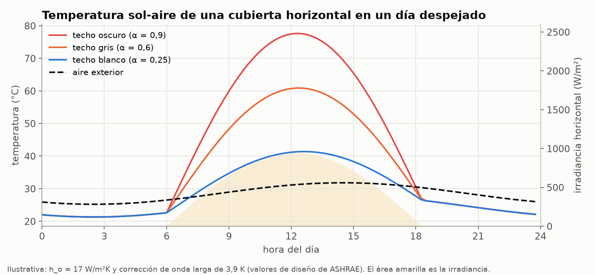
Figura 5 Temperatura sol-aire de una cubierta horizontal con tres absortancias, en un día despejado de 28,5 ± 3,3 °C.#
Al mediodía del ejemplo de la Figura 5 el aire está a 31 °C, pero un techo oscuro se comporta como si el aire estuviera a 78 °C y uno blanco a 41 °C. Por eso la posición de la vivienda frente al techo (casa, último piso o piso intermedio) y el color del techo pesan tanto en la carga de enfriamiento de Barranquilla (Arquetipos de vivienda y Techos). De noche la corrección de onda larga hace que el techo quede más frío que el aire. ASHRAE usa 3,9 K para superficies horizontales, y en la Fase 2 ese término se calcula con la temperatura del cielo de ERA5-Land (Clima).
3.4 Capacidad térmica e inercia#
Los materiales pesados, como el concreto y el ladrillo, almacenan calor. Si una vivienda se representa con una sola resistencia \(R\) hacia el exterior y una sola capacidad \(C\) (J/K), la ecuación (4) sin ganancias queda
La constante de tiempo \(\tau\) dice qué tan lento responde el interior. Si la temperatura exterior oscila cada día como una senoide de frecuencia \(\omega = 2\pi/24\) h⁻¹, la solución estable oscila con la misma frecuencia, pero con menor amplitud y con retraso:

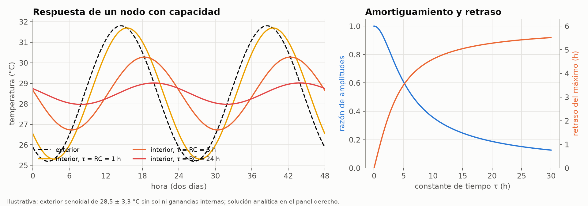
Figura 6 Respuesta de un modelo 1R1C a un día senoidal. Izquierda: temperatura interior con tres constantes de tiempo. Derecha: razón de amplitudes y retraso del máximo según la ecuación (9).#
Una vivienda de mucha masa recorta el máximo de la tarde y lo pasa a la noche, cuando la gente está en casa y enciende el A/C. Por eso la inercia afecta la hora del pico, no solo la energía.
3.5 Redes de resistencias y capacidades: el modelo 5R1C#
Un modelo de una resistencia y una capacidad es demasiado simple para separar el aire, las superficies y la masa de la vivienda. El método horario simplificado de la norma ISO 13790 usa una red de cinco conductancias \(H\) (W/K) y una capacidad \(C_m\) (ISO, 2008), que es la base del módulo térmico de la Fase 2 (Figura 7).

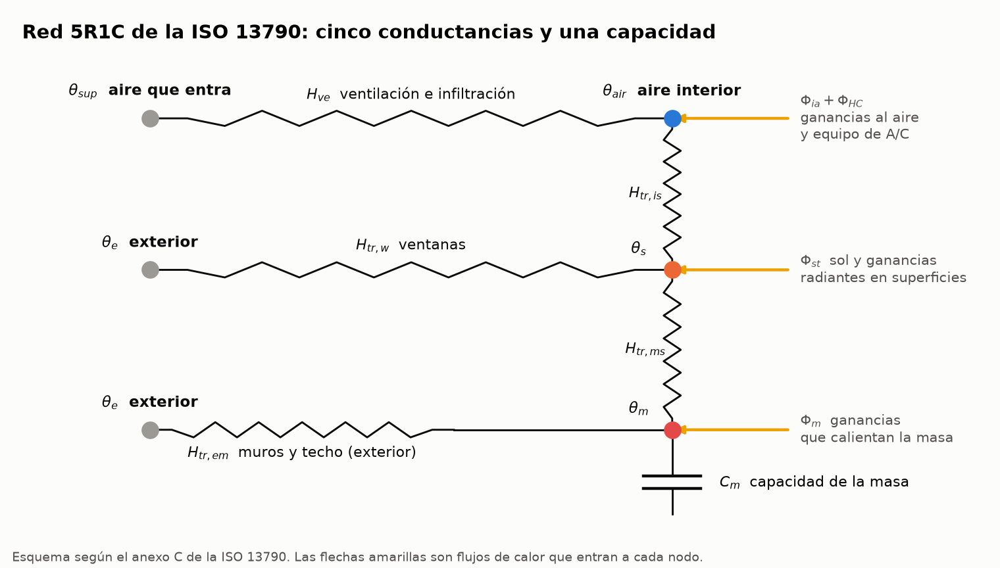
Figura 7 Red 5R1C. El aire interior, las superficies interiores y la masa del edificio son tres nodos de temperatura conectados por conductancias.#
Los tres nodos son el aire interior \(\theta_{air}\), un nodo que representa las superficies interiores \(\theta_s\) y un nodo de masa \(\theta_m\). Las conductancias son la de ventilación e infiltración \(H_{ve}\), la de ventanas \(H_{tr,w}\), la de los elementos opacos hacia el exterior \(H_{tr,em}\), el acople del aire con las superficies \(H_{tr,is}\) y el de las superficies con la masa \(H_{tr,ms}\). Escribiendo la primera ley en cada nodo:
donde las \(\Phi\) son las ganancias de calor que llegan a cada nodo (personas, equipos, sol) y \(\Phi_{HC}\) es el calor que agrega o retira el equipo, negativo cuando enfría. Solo el nodo de masa tiene capacidad. Los otros dos se resuelven como un balance instantáneo en cada paso de tiempo. La norma resuelve la ecuación de la masa con el método de Crank-Nicolson en pasos de una hora. Con la red se calculan dos cosas:
En flotación libre (\(\Phi_{HC} = 0\)), la temperatura que tendría la vivienda sin A/C. Con ella el modelo decide si el hogar enciende el equipo.
Con consigna, el \(\Phi_{HC}\) necesario para que \(\theta_{air}\) llegue a la temperatura fijada en el termostato. Esa es la carga sensible que debe retirar el A/C.
La temperatura operativa, la que siente una persona, combina la del aire con la de las superficies que la rodean. La norma la aproxima como \(\theta_{op} = 0{,}3\,\theta_{air} + 0{,}7\,\theta_s\). Bajo un techo caliente, \(\theta_s\) sube y la persona siente calor aunque el aire esté a la consigna.
3.6 Aire húmedo: psicrometría y carga latente#
El aire de Barranquilla tiene mucho vapor de agua. Para quitar humedad, el A/C enfría el aire por debajo de su punto de rocío y condensa el agua en el serpentín, y esa condensación también cuesta energía. La psicrometría estudia el aire húmedo. La presión de vapor de saturación se aproxima con la fórmula de Magnus (Alduchov y Eskridge, 1996), y de ella sale la razón de humedad \(w\), los kilogramos de agua por kilogramo de aire seco:
con \(T\) en °C, \(\phi\) la humedad relativa (entre 0 y 1) y \(p\) la presión atmosférica. La entalpía del aire húmedo, su contenido de energía por kilogramo de aire seco, suma una parte que depende de la temperatura y otra del vapor (ASHRAE, 2021):
Cuando entra aire exterior a razón de \(\dot m\) (kg/s), la carga se divide en una parte sensible, por la diferencia de temperatura, y una latente, por la diferencia de humedad que hay que condensar, con el calor de vaporización \(h_{fg} \approx 2450\) kJ/kg:

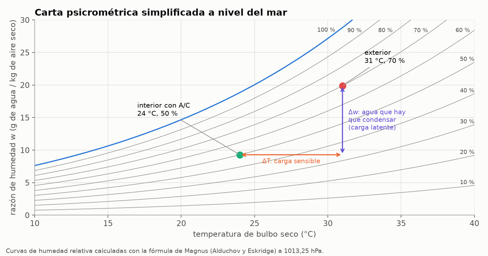
Figura 8 Carta psicrométrica simplificada. El aire exterior (rojo) debe enfriarse y secarse para llegar al estado interior (verde).#
En el ejemplo de la Figura 8, el exterior a 31 °C y 70 % tiene 19,9 g de agua por kilogramo y el interior a 24 °C y 50 % tiene 9,3 g/kg. Si una vivienda de 150 m³ renueva su aire una vez por hora, la infiltración aporta 0,34 kW de carga sensible y 1,25 kW de latente, casi cuatro veces más. En un clima seco la proporción sería la inversa. Por eso la Fase 2 calcula la carga latente con un balance de humedad del aire, que incluye la infiltración, la ventilación y el vapor que aportan las personas, y no la trata como un porcentaje fijo de la sensible.
3.7 Infiltración y ventilación#
El aire exterior entra por rendijas, puertas y ventanas. Su caudal se expresa en renovaciones por hora (ACH), el número de veces que el volumen de la vivienda se reemplaza en una hora. Con \(n\) renovaciones por hora, el flujo másico y la conductancia de ventilación son
La infiltración real casi nunca se mide, varía mucho entre viviendas y siempre es positiva, de modo que la tesis la representa con una distribución lognormal (sección 6.2) (Nazaroff, 2021).
4. Cómo se produce el frío: equipos de refrigeración#
4.1 Ciclo de compresión de vapor y coeficiente de desempeño#
El A/C y la nevera usan el mismo principio. Un refrigerante se evapora a baja presión en el evaporador, absorbe calor del espacio que se quiere enfriar, un compresor eleva su presión y temperatura, y en el condensador el refrigerante cede ese calor al exterior y vuelve a líquido. Una válvula de expansión cierra el ciclo bajando la presión. La segunda ley de la termodinámica dice que el calor no pasa solo de lo frío a lo caliente, y el compresor es el trabajo que hay que pagar para lograrlo.
La eficiencia se mide con el coeficiente de desempeño (COP), el calor retirado \(\dot Q_L\) por cada unidad de electricidad \(\dot W\). Ningún equipo supera el límite de Carnot, que depende solo de las temperaturas absolutas (en kelvin) del lado frío \(T_L\) y del lado caliente \(T_H\) (Çengel y Boles, 2015):
Entre 24 °C adentro y 32 °C afuera el límite de Carnot es 37, pero un equipo real no trabaja entre esas temperaturas. El evaporador debe estar más frío que el aire interior y el condensador más caliente que el exterior para que el calor fluya. Con un evaporador a 10 °C y un condensador a 47 °C el límite baja a 7,7, y un equipo real alcanza más o menos la mitad, del orden de 3,4. La consecuencia práctica de la ecuación (15) es que el COP baja cuando hace más calor afuera. En la hora más caliente el A/C retira más calor y además lo hace con menos eficiencia (Figura 9).
En las fichas técnicas el COP aparece como EER (en Btu/h por W, \(EER \approx 3{,}412\, COP\)) o como un valor estacional (SEER o CSPF), que promedia el desempeño en un año de temperaturas y cargas típicas.
4.2 Carga parcial, ciclos e inversor#
La mayor parte del tiempo el A/C no necesita toda su capacidad. La razón de carga parcial es \(PLR = \dot Q_{\text{carga}} / \dot Q_{\text{capacidad}}\). Un equipo sin inversor solo puede estar prendido o apagado, así que atiende la carga parcial con ciclos, y cada arranque desperdicia energía mientras el serpentín se vuelve a enfriar. Esa pérdida se resume con un factor de carga parcial lineal, con un coeficiente de degradación \(C_d\) del orden de 0,25:
Un equipo con inversor varía la velocidad del compresor. A carga parcial sus intercambiadores quedan sobredimensionados para el calor que manejan, las diferencias de temperatura bajan y el COP sube, hasta un mínimo de modulación por debajo del cual vuelve a ciclar. La norma ISO 16358-1 define cómo calcular el desempeño estacional con esas curvas (ISO, 2013), y la Fase 2 la usa para los equipos con inversor.

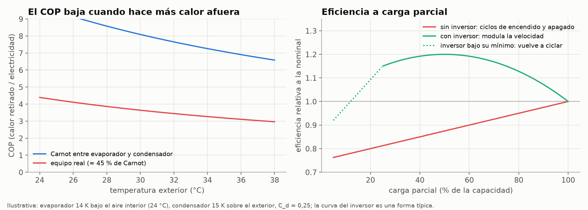
Figura 9 Izquierda: COP de Carnot entre evaporador y condensador y COP de un equipo real según la temperatura exterior. Derecha: eficiencia relativa a carga parcial, sin inversor (ecuación (16)) y con una curva típica de inversor.#
4.3 La nevera#
La nevera es un pequeño ciclo de refrigeración que funciona todo el día. El calor que entra a su gabinete por las paredes y por las aperturas de la puerta es \(\dot Q = UA_{nev}(T_a - T_{int}) + \dot Q_{puertas}\), donde \(T_a\) es la temperatura del lugar donde está. El compresor trabaja la fracción del tiempo necesaria para sacar ese calor, el ciclo de trabajo:
El consumo crece con la temperatura ambiente por dos vías, porque entra más calor y porque el COP baja. En el ejemplo de la Figura 10 pasa de 0,76 kWh/día a 25 °C a 1,10 kWh/día a 32 °C. Por eso la Fase 2 calcula el consumo de la nevera con la temperatura de la zona de la vivienda donde se ubica, y no con un valor fijo.

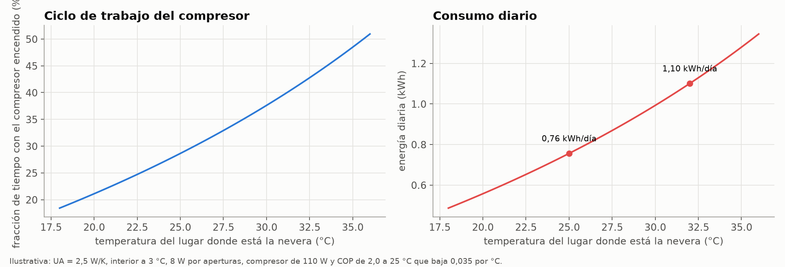
Figura 10 Ciclo de trabajo y consumo diario de una nevera ilustrativa según la temperatura del lugar.#
4.4 El ventilador#
El ventilador no enfría el aire. Al contrario, los 50 a 80 W de su motor terminan como calor en la habitación. Lo que hace es aumentar la velocidad del aire sobre la piel, y con ella la pérdida de calor del cuerpo por convección y por evaporación del sudor. ASHRAE 55 permite por eso temperaturas más altas cuando hay movimiento de aire (ASHRAE, 2020). En la tesis el ventilador sigue la misma lógica de decisión que el A/C, pero su consumo no depende del balance térmico de la vivienda, solo de cuántos equipos hay y cuántas horas se usan.
5. Confort térmico y medidas del calor#
5.1 Temperatura operativa y modelo adaptativo#
La sensación de calor depende de la temperatura del aire, de la temperatura de las superficies que rodean a la persona (temperatura radiante media), de la humedad, de la velocidad del aire, de la ropa y de la actividad. La temperatura operativa resume las dos primeras. Con aire casi quieto es aproximadamente el promedio de las dos, \(T_{op} \approx (T_a + \bar T_r)/2\).
El modelo adaptativo de ASHRAE 55 reconoce que las personas que viven en climas cálidos y en espacios sin A/C aceptan temperaturas más altas, porque se adaptan con la ropa, las ventanas y la costumbre (ASHRAE, 2020). La temperatura de confort crece con la temperatura media exterior predominante \(\bar T_{pma}\):
con una banda de ±3,5 K en la que el 80 % de las personas se siente bien y una de ±2,5 K para el 90 %.

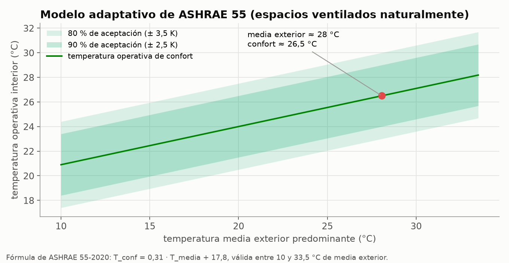
Figura 11 Modelo adaptativo de ASHRAE 55-2020. El punto rojo corresponde a una media exterior cercana a la de Barranquilla.#
Con una media exterior de unos 28 °C, la ecuación (18) da 26,5 °C, que es la temperatura de confort que la línea base de CEELA usa como consigna de refrigeración en Barranquilla (UPME et al., 2025c) (CEELA). El modelo se definió para espacios sin enfriamiento mecánico, de modo que la tesis la toma como una referencia de diseño, no como la consigna que fijan los hogares en su termostato.
5.2 Índice de calor#
En un clima húmedo la temperatura no basta para describir el calor que se siente, porque la humedad dificulta la evaporación del sudor. El índice de calor (heat index, HI) es una temperatura aparente que combina temperatura y humedad relativa. Steadman lo derivó de un modelo fisiológico del cuerpo humano (Steadman, 1979), y Rothfusz ajustó a sus tablas una regresión que usa el Servicio Meteorológico de Estados Unidos (Rothfusz, 1990). Con \(T\) en °F y \(HR\) en %:
más dos correcciones (para humedad muy baja y para humedad mayor de 85 % entre 80 y 87 °F). Cuando el calor es moderado, el algoritmo usa en su lugar la fórmula simple de Steadman,
y pasa a la de Rothfusz cuando el promedio de \(HI_{simple}\) y \(T\) llega a 80 °F. A 31 °C y 70 % de humedad, el índice de calor es 37,6 °C.

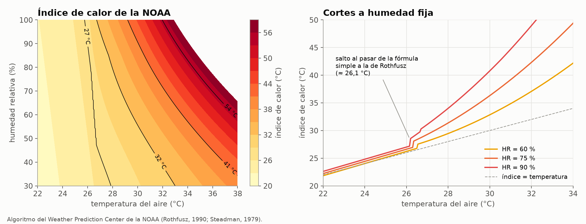
Figura 12 Índice de calor de la NOAA. Izquierda: mapa según temperatura y humedad. Derecha: cortes a humedad fija, con el salto del cambio de fórmula.#
El cambio de fórmula produce un salto. Con 90 % de humedad, el índice pasa de 27,2 a 28,6 °C cuando la temperatura cruza 26,2 °C (Figura 12). Las noches de Barranquilla están cerca de ese punto, de modo que el salto afecta las horas nocturnas. Su efecto en los análisis que usan el índice está anotado como pendiente en Datos sospechosos.
Para Colombia se prefiere el índice de calor porque, en un país sin estaciones marcadas, los grados-día calculados con la sola temperatura casi no varían de un mes a otro, mientras que el índice incorpora la humedad. La tesis lo usa para resumir el efecto del clima sobre el uso de los equipos. En cambio, los flujos de calor a través de la envolvente se calculan con la temperatura, la radiación y la humedad por separado, porque el índice mide la percepción de las personas y no el calor que atraviesa un muro.
5.3 Grados-hora de enfriamiento y temperatura de equilibrio#
Los grados-hora de enfriamiento (CDH) acumulan cuánto y por cuánto tiempo el índice de calor supera una temperatura base \(T_b\):

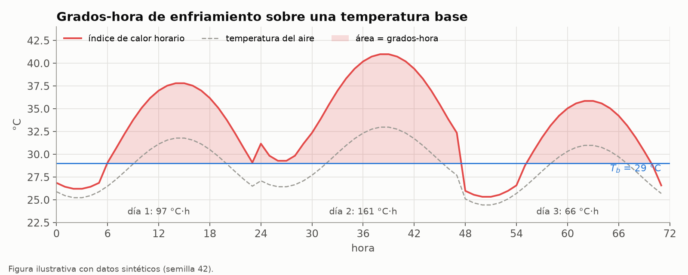
Figura 13 Grados-hora de tres días sintéticos con una base de 29 °C. El área sombreada de cada día es su total de grados-hora.#
La temperatura base no es la consigna del termostato. Es la temperatura de equilibrio del edificio, aquella a la que las ganancias internas y solares compensan justo las pérdidas por la envolvente y la ventilación, y a partir de la cual hace falta enfriar:
Como las ganancias son positivas, la base queda por debajo de la consigna. La escala horaria importa porque un promedio diario esconde las horas calurosas de un día templado. La tesis estima la base con los datos de demanda, como hace el método PRISM con facturas mensuales, y la usa en la regresión de grados-hora contra la que se compara el modelo bottom-up (sección 9.4).
6. Probabilidad: el lenguaje de la incertidumbre#
6.1 Variables aleatorias#
Una variable aleatoria es una cantidad cuyo valor no se conoce de antemano, pero sí su distribución de probabilidad. Que un hogar tenga A/C es una variable de Bernoulli, que vale 1 con probabilidad \(\pi\) y 0 con probabilidad \(1-\pi\). El número de hogares con A/C en una muestra de \(n\) hogares es binomial:
La esperanza \(E[\cdot]\) es el promedio que se obtendría repitiendo muchas veces el experimento, y la varianza \(\operatorname{Var}(\cdot)\) mide la dispersión alrededor de ese promedio. Su raíz cuadrada es la desviación estándar \(\sigma\).
6.2 Distribuciones que usa la tesis#
Cuando un parámetro no se conoce con exactitud, la tesis no le asigna un número sino una distribución, que dice qué valores son plausibles y con qué probabilidad (Figura 14).

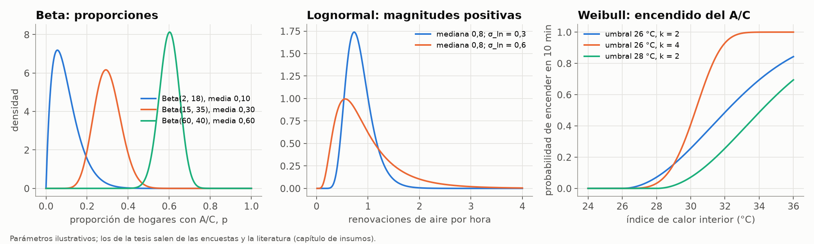
Figura 14 Tres familias de distribuciones con parámetros ilustrativos.#
Beta, para proporciones. Vive entre 0 y 1, así que sirve para la tenencia de A/C o la fracción de hogares que paga la electricidad. Su densidad y sus momentos son
Dada una proporción estimada \(\bar p\) y su error estándar \(s\), los parámetros salen igualando los momentos, como se explica en Insumos (Gelman et al., 2013).
Lognormal, para magnitudes positivas y asimétricas. Una variable es lognormal si su logaritmo es normal. Sirve para la infiltración, la capacidad de los equipos o el consumo, que no pueden ser negativos y tienen una cola larga hacia valores altos.
Weibull, para el encendido del A/C. Ren et al. modelaron con datos de campo la probabilidad de que un hogar encienda el A/C en un intervalo \(\Delta t\) como una función de la temperatura interior \(T\) por encima de un umbral \(u\) (Ren et al., 2014):
donde \(\lambda\) controla la escala y \(k\) qué tan brusco es el paso de improbable a casi seguro. Los parámetros de Ren et al. no se transfieren a Barranquilla, pero la estructura sí, y es la que adopta la Fase 2 con el índice de calor interior en lugar de la temperatura. Se le suman disparadores de evento, porque una buena parte de los encendidos ocurre al llegar a casa o al acostarse, no cuando la temperatura cruza un umbral.
6.3 Muestras de encuestas: pesos y efecto de diseño#
Las encuestas del DANE no son muestras aleatorias simples. Cada hogar \(i\) tiene un factor de expansión \(w_i\), el número de hogares de la población que representa, y una proporción se estima con la media ponderada (Lohr, 2019):
Los hogares se seleccionan por conglomerados (segmentos o manzanas), y los vecinos se parecen entre sí. Por eso una muestra de \(n\) hogares contiene menos información que \(n\) hogares independientes. El efecto de diseño mide cuánto crece la varianza respecto de un muestreo aleatorio simple (Kish, 1965):
y \(n_{ef}\) es el tamaño de muestra efectivo. Un intervalo de confianza del 95 % para una proporción es aproximadamente \(\hat\pi \pm 1{,}96\,\sqrt{\text{deff}\cdot\hat\pi(1-\hat\pi)/n}\). Con muestras pequeñas, como en los estratos 5 y 6, se usa la corrección de Agresti y Coull (Agresti y Coull, 1998). El detalle de cómo se aplica a cada encuesta está en Encuestas.
6.4 Método de Monte Carlo#
Cuando un resultado depende de muchas variables aleatorias que interactúan, como el consumo de miles de hogares con equipos, horarios y viviendas distintos, no hay una fórmula cerrada para su distribución. El método de Monte Carlo la aproxima simulando. Se sortean \(N\) casos, se calcula el resultado de cada uno y se promedia. La ley de los grandes números garantiza que el promedio converge al valor esperado, y el teorema central del límite dice qué tan rápido:

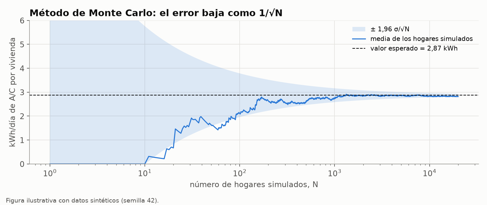
Figura 15 Media del consumo diario de A/C a medida que se simulan más hogares, con la banda de ±1,96 errores estándar.#
Para reducir el error a la mitad hay que simular cuatro veces más hogares. Esto fija cuántas viviendas simula la Fase 2 en cada juego de parámetros.
6.5 Variabilidad e incertidumbre#
La tesis separa dos tipos de incertidumbre. La variabilidad (incertidumbre aleatoria) refleja diferencias reales entre hogares, como que unos enciendan el A/C a las 20 h y otros a las 23 h. No desaparece con más datos y determina el factor de coincidencia. La incertidumbre epistémica refleja lo que no se sabe, como la consigna media de un estrato. Se reduce con más datos y es la que define la banda del perfil agregado. En el modelo, la primera se representa sorteando hogares dentro de una simulación y la segunda sorteando los parámetros entre simulaciones (dos niveles de Monte Carlo).
7. Estadística: relacionar el consumo con el clima#
7.1 Regresión lineal por mínimos cuadrados#
Una regresión lineal explica una variable \(y\) con varias variables \(x_1, \dots, x_p\):
Los coeficientes de mínimos cuadrados ordinarios (MCO) son los que minimizan la suma de los errores al cuadrado, \(\sum_i \varepsilon_i^2\). El coeficiente de determinación \(R^2 = 1 - \sum \hat\varepsilon_i^2 / \sum (y_i - \bar y)^2\) es la fracción de la variación de \(y\) que explica el modelo.
Cuando la variable dependiente es \(100 \ln y\), cada coeficiente se lee como un cambio porcentual. Si \(\beta_1 = 1{,}9\) para el índice de calor, un grado más de índice aumenta la demanda cerca de 1,9 %. Así se comparan formas y no niveles, porque un mercado grande y uno pequeño pueden tener la misma respuesta porcentual. Este es el diseño de la regresión de la Respuesta horaria al calor.

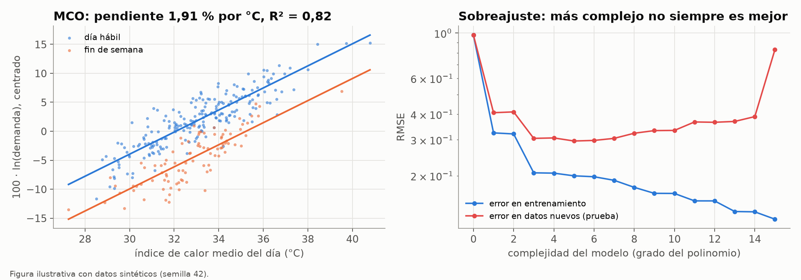
Figura 16 Izquierda: regresión de una demanda diaria sintética sobre el índice de calor, con una variable para el fin de semana. Derecha: error de ajuste y de predicción según la complejidad del modelo.#
7.2 Efectos fijos, autocorrelación y errores robustos#
En una serie diaria de varios años la demanda también cambia por el crecimiento económico, las tarifas o la estacionalidad. Un efecto fijo por cada año-mes es una constante propia de ese mes que absorbe todo lo que no cambia dentro del mes. Así, el coeficiente del calor sale solo de comparar días calurosos con días frescos del mismo mes.
Los errores de días consecutivos se parecen (están autocorrelacionados). Si se ignora, los errores estándar quedan demasiado pequeños y cualquier efecto parece significativo. Los errores de Newey y West corrigen la varianza de los coeficientes para la autocorrelación y la heterocedasticidad (varianza que cambia) (Newey y West, 1987). La significancia de un coeficiente se juzga con su valor p, la probabilidad de observar un efecto al menos tan grande si en realidad fuera cero.
7.3 Regresión logística#
Para explicar una variable binaria, como tener o no A/C, la regresión lineal no sirve porque puede dar probabilidades negativas o mayores que uno. La regresión logística modela el logaritmo de los momios (Hosmer et al., 2013):
El exponencial de un coeficiente, \(e^{\beta_j}\), es la razón de momios, cuánto se multiplican los momios de tener A/C cuando \(x_j\) aumenta en uno. Con ella se relaciona la tenencia con el ingreso y el material del techo en los capítulos de datos.
7.4 Sobreajuste#
Un modelo más complejo siempre se ajusta mejor a los datos con que se construyó, pero a partir de cierto punto empieza a ajustar el ruido y predice peor datos nuevos. Ese es el sobreajuste (panel derecho de la Figura 16) (Hastie et al., 2009). La defensa es evaluar el modelo con datos que no se usaron para ajustarlo. La misma idea separa la calibración de la validación en la sección 9.
8. Inferencia bayesiana y calibración#
8.1 Teorema de Bayes#
La estadística bayesiana trata los parámetros desconocidos \(\theta\) como variables aleatorias. Antes de ver los datos se resume lo que se sabe en una distribución previa (prior) \(p(\theta)\). Los datos \(y\) entran por la verosimilitud \(p(y \mid \theta)\), la probabilidad de observarlos si el parámetro valiera \(\theta\). El resultado es la distribución posterior (Gelman et al., 2013):
Para una proporción con previa Beta y datos binomiales, la posterior es otra Beta y la actualización solo suma conteos. Esto se conoce como previa conjugada:

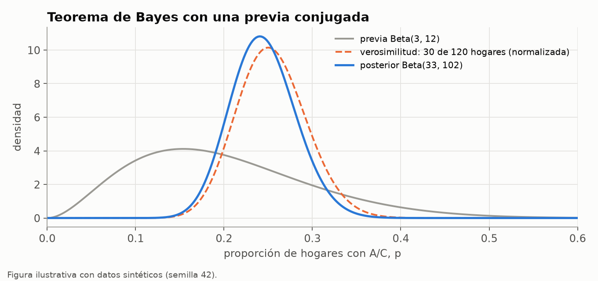
Figura 17 Actualización bayesiana de una proporción: la previa, la verosimilitud de 30 hogares con A/C entre 120 y la posterior resultante.#
En el ejemplo, la posterior tiene media 0,24 y un intervalo creíble del 95 % de 0,18 a 0,32. La posterior se parece más a los datos que a la previa porque 120 hogares pesan más que una previa vaga.
8.2 Equifinalidad#
Cuando solo se observan totales, varios conjuntos de parámetros pueden producir el mismo resultado. Este problema se llama equifinalidad. En la Figura 18, que el 20 % de los hogares use el A/C 12 horas de noche da la misma energía diaria que el 60 % lo use 4 horas en la tarde. Un dato de consumo mensual no distingue las dos situaciones, pero sus perfiles horarios son opuestos.

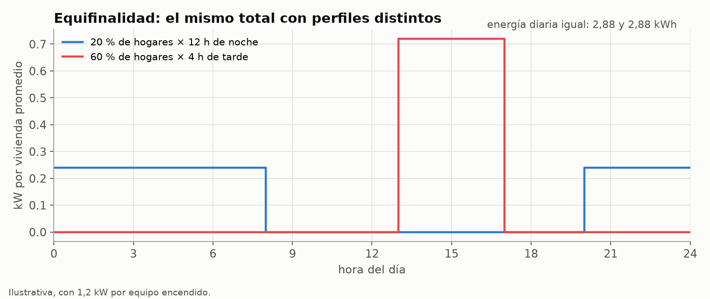
Figura 18 Dos combinaciones de tenencia y horas de uso con la misma energía diaria y perfiles distintos.#
La tesis reduce la ambigüedad de dos maneras. La tenencia no se calibra, sino que se toma de la Encuesta de Calidad de Vida, de modo que solo queda por estimar la intensidad de uso. Y el modelo se juzga con varios patrones a la vez (sección 9.3), entre ellos la forma horaria de la respuesta al calor en la demanda de XM.
8.3 Calibración con discrepancia#
Calibrar es ajustar algunos parámetros para que el modelo se acerque a lo observado. Kennedy y O’Hagan proponen reconocer explícitamente que el modelo es imperfecto (Kennedy y O'Hagan, 2001):
donde \(\eta(x, \theta)\) es el simulador con entradas \(x\) (clima, estrato, mes) y parámetros \(\theta\), \(\delta(x)\) es la discrepancia o error sistemático del modelo y \(\varepsilon\) el error de medición. Sin \(\delta\), los parámetros toman valores poco realistas para compensar lo que el modelo no representa. En la tesis el consumo facturado de cada estrato se separa en lo que el modelo simula (climatización y refrigeración), una carga base de los demás usos con su propia previa, la respuesta al precio, la discrepancia y el error de lectura. Si la carga base se dejara libre, absorbería cualquier error en el consumo de A/C y el total seguiría cuadrando sin que los datos restringieran nada.
8.4 Computación bayesiana aproximada (ABC)#
El modelo de la tesis sortea hogares, equipos y horarios, así que la verosimilitud \(p(y \mid \theta)\) no tiene fórmula. La computación bayesiana aproximada (ABC) la evita simulando. El algoritmo más simple es por rechazo:
Se sortea un \(\theta^*\) de la previa \(p(\theta)\).
Se simulan datos \(y^*\) con el modelo y ese \(\theta^*\).
Se acepta \(\theta^*\) si un resumen de los datos simulados se parece al de los observados, \(\rho\big(s(y^*), s(y^{obs})\big) \le \varepsilon\).
Los valores aceptados forman una muestra de una posterior aproximada, que se acerca a la verdadera a medida que la tolerancia \(\varepsilon\) baja (Figura 19).

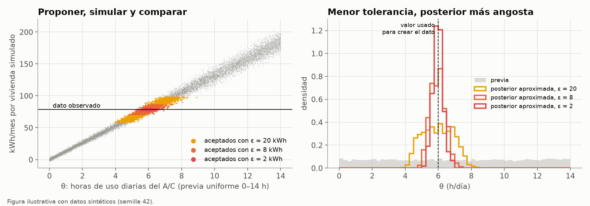
Figura 19 ABC por rechazo para estimar las horas diarias de uso del A/C a partir del consumo mensual medio de 1.000 hogares sintéticos. Izquierda: cada punto es una simulación. Derecha: previa y posteriores aproximadas con tres tolerancias.#
Con una tolerancia pequeña casi todas las simulaciones se rechazan. La versión secuencial (ABC-SMC) corrige esa ineficiencia con una secuencia de tolerancias decrecientes \(\varepsilon_1 > \varepsilon_2 > \dots > \varepsilon_T\) (Toni et al., 2009). En cada etapa se toman las partículas aceptadas en la anterior, se perturban con un núcleo \(K\) y se repesan para no sesgar la posterior:
Cuando cada simulación es costosa, se entrena antes un emulador, un modelo estadístico rápido que aprende a imitar las salidas del simulador a partir de unas cientos de corridas, y la calibración se hace con él.
9. Sensibilidad y validación#
9.1 Método de Morris#
Antes de calibrar conviene saber qué parámetros importan. El método de Morris recorre el espacio de parámetros cambiando uno a la vez a lo largo de varias trayectorias, y calcula en cada paso un efecto elemental (Morris, 1991):
Un \(\mu^*\) grande indica un parámetro influyente. Un \(\sigma\) grande indica que su efecto cambia según el valor de los demás, es decir, que no es lineal o que interactúa con otros. Los parámetros con \(\mu^*\) y \(\sigma\) pequeños se fijan en su valor central. Morris es barato y sirve como criba cuando hay decenas de parámetros.
9.2 Índices de Sobol#
Los índices de Sobol descomponen la varianza de la salida \(Y\) en las contribuciones de cada parámetro y de sus interacciones (Sobol', 2001):
El índice de primer orden \(S_i\) es la fracción de la varianza que se eliminaría si se conociera exactamente \(X_i\). El total \(S_{Ti}\) incluye además todas las interacciones de \(X_i\) con los demás (\(X_{\sim i}\) significa todos menos \(X_i\)). Si \(S_{Ti}\) es casi cero, el parámetro puede fijarse sin perder nada. Ambos se estiman por Monte Carlo con matrices de muestras cruzadas (Saltelli et al., 2010). En la tesis también se calculan por grupos, para separar el peso de los parámetros con respaldo en datos del peso de los supuestos.

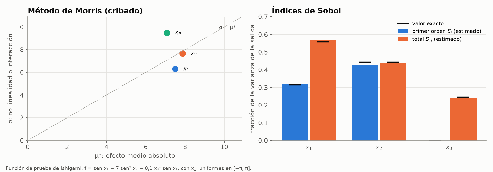
Figura 20 Morris y Sobol en la función de prueba de Ishigami. Los índices estimados con 20.000 muestras coinciden con los valores exactos (marcas negras).#
En la función de Ishigami, \(x_3\) tiene índice de primer orden cero, pero índice total de 0,24. Solo actúa a través de su interacción con \(x_1\). Un análisis que moviera un parámetro a la vez desde un punto central lo declararía irrelevante, y por eso la tesis usa métodos globales.
9.3 Validación orientada a patrones#
Validar es comparar el modelo con datos que no se usaron para calibrarlo. El modelado orientado a patrones exige que el modelo reproduzca a la vez varios patrones observables a escalas distintas (Grimm et al., 2005). Para la tesis esos patrones son el nivel de consumo por estrato, la respuesta mensual del consumo al calor, el orden entre estratos y la forma horaria de la respuesta al calor. Un modelo que acierta el consumo mensual con el pico a las 15 h se descarta si los datos muestran que la respuesta al calor ocurre de noche, porque acierta el total por una razón equivocada.
9.4 Métricas de error#
Para comparar series simuladas \(\hat y\) con observadas \(y\) se usan el error cuadrático medio normalizado y el sesgo medio normalizado de la guía 14 de ASHRAE (ASHRAE, 2014):
donde \(p\) es el número de parámetros ajustados. La guía acepta un modelo horario con CV(RMSE) menor de 30 % y NMBE dentro de ±10 %, y uno mensual con 15 % y ±5 %.
9.5 Pronósticos con banda: cobertura, nitidez y CRPS#
El modelo de la tesis no da un número, sino una distribución de resultados. Una banda muy ancha siempre contiene el dato observado (buena cobertura), pero no dice nada útil (poca nitidez). El CRPS (continuous ranked probability score) premia las dos cosas a la vez. Compara la función de distribución acumulada predicha \(F\) con un escalón en el valor observado \(y\) (Gneiting y Raftery, 2007):
donde \(X\) y \(X'\) son dos sorteos independientes de \(F\). La segunda forma se calcula directamente con las simulaciones del modelo. Tiene las unidades de la variable, menor es mejor y, si el pronóstico es un solo número, se reduce al error absoluto.

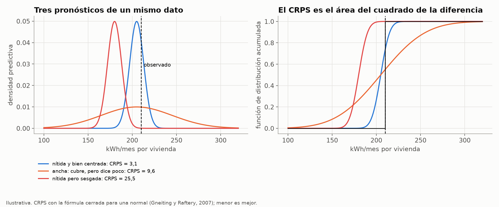
Figura 21 Tres pronósticos de un mismo dato y su CRPS. Derecha: el CRPS es el área entre la distribución acumulada de cada pronóstico y el escalón del dato.#
10. Aprendizaje automático#
10.1 Aprendizaje supervisado y no supervisado#
El aprendizaje automático agrupa métodos que aprenden patrones a partir de datos (Hastie et al., 2009). En el supervisado cada registro tiene una respuesta conocida (por ejemplo, el estrato o el material del techo) y el algoritmo aprende a predecirla. En el no supervisado no hay respuesta, y el algoritmo busca estructura, por ejemplo grupos de viviendas parecidas. Los arquetipos de la tesis salen de aprendizaje no supervisado. La predicción del estrato del trabajo previo y la clasificación de techos con imágenes son supervisadas.
10.2 Arquetipos y distancias#
Un arquetipo es una vivienda representativa de un grupo de viviendas parecidas. Simular 15 arquetipos con sus distribuciones en lugar de 332.718 viviendas hace viable el cálculo para toda la ciudad. Para agrupar hay que definir qué tan distintas son dos viviendas, es decir, una distancia. Con variables numéricas estandarizadas (restando la media y dividiendo por la desviación estándar, para que el área en m² no domine al número de pisos) se usa la euclidiana. El catastro mezcla variables numéricas (área, pisos, antigüedad) y categóricas (tipo de edificio, posición frente al techo), y para ellas se usa la distancia de Gower (Gower, 1971):
Cada variable aporta una diferencia entre 0 y 1, y la distancia total es su promedio.
10.3 K-Means y k-prototypes#
K-Means divide los datos en \(k\) grupos minimizando la suma de las distancias al cuadrado de cada punto al centro (centroide) de su grupo (Lloyd, 1982):
El algoritmo de Lloyd alterna dos pasos hasta que nada cambia: asignar cada punto al centroide más cercano y recalcular cada centroide como la media de sus puntos. Como el resultado depende del punto de partida, se repite con varias semillas y se conserva la mejor solución. k-prototypes extiende la idea a variables mixtas (Huang, 1998). Suma la distancia euclidiana de las numéricas y el número de categorías distintas, ponderado por un peso \(\gamma\):

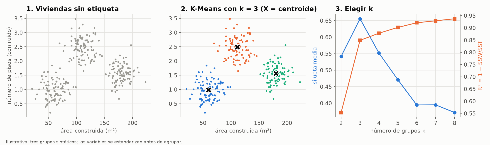
Figura 22 K-Means sobre viviendas sintéticas descritas por área y número de pisos. El tercer panel muestra dos criterios para elegir el número de grupos.#
10.4 Agrupamiento jerárquico y DBSCAN#
El agrupamiento jerárquico aglomerativo empieza con cada registro en su propio grupo y une, paso a paso, los dos grupos más cercanos. El resultado es un árbol (dendrograma) que se corta a la altura que da el número de grupos deseado. Admite cualquier matriz de distancias, incluida la de Gower, y difiere en cómo mide la distancia entre grupos. El enlace promedio usa la media de las distancias entre sus miembros, y el de Ward une los grupos que menos aumentan la varianza interna (Ward, 1963).
DBSCAN define los grupos por densidad (Ester et al., 1996). Un punto es núcleo si tiene al menos \(m\) vecinos a una distancia menor que \(\varepsilon\), los grupos son cadenas de núcleos conectados y los puntos que no alcanzan ningún núcleo quedan como atípicos. No necesita fijar \(k\), encuentra formas no convexas y separa registros raros. En la tesis se usa para identificar viviendas atípicas del catastro y comprobar que excluirlas no cambia los arquetipos (Arquetipos de vivienda).

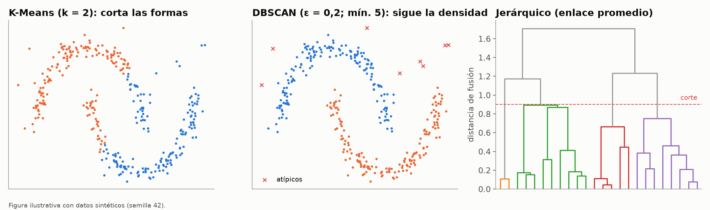
Figura 23 K-Means, DBSCAN y agrupamiento jerárquico sobre datos sintéticos con formas no convexas y ruido.#
10.5 Cuántos grupos: silueta y fracción explicada#
La silueta de un registro compara su distancia media a los de su grupo, \(a(i)\), con la distancia media al grupo vecino más cercano, \(b(i)\) (Rousseeuw, 1987):
Vale cerca de 1 si el registro está bien ubicado, cerca de 0 si está en la frontera y es negativa si estaría mejor en otro grupo. Su promedio resume la calidad del agrupamiento.
El criterio principal de la tesis no es geométrico sino físico. Para cada vivienda se calcula una carga anual de enfriamiento simplificada, sensible y latente, con la misma envolvente para todas, y se mide qué fracción de su varianza explican los grupos:
donde \(L_i\) es la carga de la vivienda \(i\) y \(\bar L_c\) la media de su grupo. Un grupo más que mejora menos de dos puntos la explicación de la carga no justifica el costo de simularlo.
10.6 Estabilidad: índice de Jaccard#
Un agrupamiento útil debe repetirse si se cambia un poco la muestra. Para comprobarlo se repite el análisis con muchas submuestras y se compara cada grupo original con su mejor pareja en cada repetición mediante el índice de Jaccard (Hennig, 2007):
Vale 0 si los dos grupos no comparten viviendas y 1 si son idénticos. Según Hennig, un grupo con Jaccard medio menor de 0,6 no es confiable y uno mayor de 0,75 es estable. El emparejamiento entre los grupos de dos corridas se hace con el método húngaro, que busca la asignación uno a uno con mayor coincidencia total.
10.7 Clasificación supervisada: árboles, bosques y redes#
Un árbol de decisión divide los datos con preguntas sucesivas («¿área mayor de 80 m²?») elegidas para que cada rama quede lo más pura posible. La pureza se mide, por ejemplo, con el índice de Gini, \(G = 1 - \sum_c p_c^2\), donde \(p_c\) es la proporción de la clase \(c\) en la rama. Un árbol solo sobreajusta con facilidad. Un bosque aleatorio entrena cientos de árboles, cada uno con una muestra bootstrap de los datos y un subconjunto al azar de variables en cada división, y promedia sus votos (Breiman, 2001). Así se reduce la varianza sin aumentar mucho el sesgo.
Para imágenes se usan redes neuronales convolucionales, que aprenden filtros que recorren la imagen y detectan bordes, texturas y, en capas más profundas, objetos como techos (He et al., 2016). Es el enfoque del estudio del color de los techos con la ortoimagen (Techos), que busca estimar la absortancia \(\alpha\) de la ecuación (7).
La calidad de un clasificador se evalúa con datos de prueba que no vio al entrenar, con la exactitud (fracción de aciertos), la sensibilidad o recall (de los casos reales de una clase, cuántos detecta) y la precisión (de los que predice en una clase, cuántos son correctos).
11. Dónde se usa cada idea#
Concepto |
Ecuación |
Fase y uso |
Capítulo con datos |
|---|---|---|---|
Factor de coincidencia |
Fase 3: diversidad de los perfiles |
— |
|
Conducción, \(U\) y \(UA\) |
Fase 1: carga del Paso 3. Fase 2: priors de envolvente |
||
Temperatura sol-aire |
Fase 1 y 2: ganancia del techo |
||
Red 5R1C |
Fase 2: módulo térmico |
— |
|
Carga latente |
Fase 1: carga del Paso 3. Fase 2: balance de humedad |
||
COP y carga parcial |
Fase 2: potencia del A/C |
— |
|
Consumo de la nevera |
Fase 2: refrigeración |
||
Modelo adaptativo |
Fase 2: límite superior de la consigna |
||
Índice de calor y CDH |
Fase 2: decisión de encendido. Fase 3: patrones |
||
Distribución Beta |
Tenencia de equipos como distribución |
||
Encendido tipo Weibull |
Fase 2: uso del A/C |
— |
|
Pesos y efecto de diseño |
Estimaciones de las encuestas |
||
Monte Carlo |
Fase 2: simulación de hogares |
— |
|
Regresión y efectos fijos |
Respuesta de la demanda al calor |
||
Calibración y ABC-SMC |
Fase 3: calibración |
— |
|
Morris y Sobol |
Fase 2: qué parámetros calibrar |
||
CRPS y Guideline 14 |
Fase 3: criterios de validación |
— |
|
Gower, k-prototypes, DBSCAN |
Fase 1: arquetipos |
||
\(R^2_k\), silueta y Jaccard |
Fase 1: número y estabilidad de los arquetipos |
Lecturas recomendadas#
Para quien quiera profundizar, estos textos cubren cada bloque con más detalle y ejemplos resueltos:
Termodinámica y ciclos de refrigeración: Çengel y Boles (2015).
Conducción, convección y radiación: Bergman et al. (2011).
Psicrometría, cargas de enfriamiento y temperatura sol-aire: ASHRAE (2021).
Estadística bayesiana y modelos jerárquicos: Gelman et al. (2013).
Muestreo de encuestas: Lohr (2019).
Aprendizaje automático: Hastie et al. (2009).
Revisión de los modelos de demanda residencial: Swan y Ugursal (2009). Modelos estocásticos de uso de equipos: Richardson et al. (2010) y RAMP (Lombardi et al., 2019).